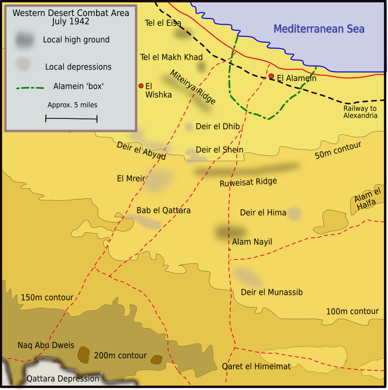

A Batalha de El Alamein foi um dos confrontos mais decisivos da Segunda Guerra Mundial, ocorrendo entre julho e novembro de 1942, no deserto do Egito. Essa batalha marcou o ponto de virada na Campanha do Norte da África, onde as forças Aliadas, lideradas pelo general britânico Bernard Montgomery, enfrentaram o Afrika Korps, comandado pelo marechal-de-campo Erwin Rommel, da Alemanha nazista. A região de El Alamein tinha grande importância estratégica, pois sua localização próxima ao Canal de Suez tornava-a vital para o controle das rotas de abastecimento no Mediterrâneo. A vitória das forças Aliadas não apenas impediu o avanço do Eixo em direção ao Oriente Médio e às reservas de petróleo, como também representou um impulso moral significativo, demonstrando que as potências do Eixo podiam ser derrotadas em terra.
O Norte da África era uma região estratégica durante a Segunda Guerra Mundial, essencial para o controle das rotas comerciais e militares no Mediterrâneo. Dominar essa área significava assegurar o fornecimento de petróleo, suprimentos e rotas de comunicação entre Europa, Oriente Médio e Ásia.
Após a queda da França em 1940, a Itália, aliada da Alemanha, buscou ampliar seu território no Norte da África, avançando a partir da Líbia. No entanto, as forças italianas encontraram resistência significativa dos britânicos no Egito, que protegiam a rota do Canal de Suez e mantinham uma posição estratégica crucial para os Aliados.
Para apoiar os italianos e tentar romper as linhas britânicas, Hitler enviou o Afrika Korps, liderado pelo marechal de campo Erwin Rommel. Rommel avançou rapidamente pelo deserto, usando táticas de surpresa e mobilidade, e chegou a ameaçar o Canal de Suez, ponto vital para o transporte de suprimentos e a manutenção da influência britânica na região.
A cidade de El Alamein, localizada entre o deserto e o mar, tornou-se um ponto estratégico. Sua posição limitada tornava quase impossível que o Eixo flanqueasse os Aliados, criando uma situação de confronto inevitável. O terreno também favorecia a defesa, permitindo que as tropas britânicas se reorganizassem e fortalecessem suas posições antes da batalha decisiva.
Sob o comando do general Bernard Montgomery, as forças britânicas e da Commonwealth prepararam uma ofensiva planejada, utilizando fortificações e artilharia pesada. A batalha resultante foi decisiva: não apenas impediu o avanço das forças do Eixo, mas também garantiu que o Canal de Suez permanecesse sob controle aliado, mantendo abertas rotas estratégicas e fortalecendo a moral das tropas aliadas.
El Alamein ficava em uma posição estratégica, entre o Mar Mediterrâneo e o Deserto de Qattara. Isso limitava os movimentos militares e transformava a batalha em uma guerra de posições.
O comando aliado foi assumido pelo general britânico Bernard Montgomery, enquanto o Eixo estava sob o comando de Erwin Rommel, conhecido como a "Raposa do Deserto".
A Batalha de El Alamein foi um divisor de águas na Campanha do Norte da África. A vitória das forças aliadas interrompeu o avanço do Eixo em direção ao Canal de Suez, preservando uma rota estratégica de abastecimento para o Reino Unido. As tropas de Rommel, desgastadas e com dificuldades de suprimento, foram obrigadas a recuar centenas de quilômetros até a Tunísia, o que reduziu drasticamente seu poder ofensivo na região.
Esse resultado abriu caminho para a Operação Tocha, com o desembarque aliado no Marrocos e na Argélia, cercando definitivamente as forças do Eixo no norte africano. Além do impacto militar, a vitória foi um enorme impulso moral, mostrando que as forças de Hitler podiam ser derrotadas em terra e aumentando a confiança das nações aliadas. Também fortaleceu o controle aliado sobre o Mediterrâneo, garantindo maior segurança para o comércio e o transporte de tropas.